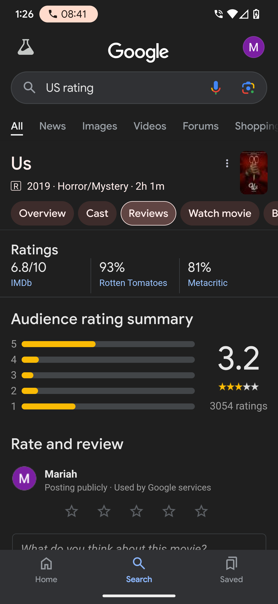
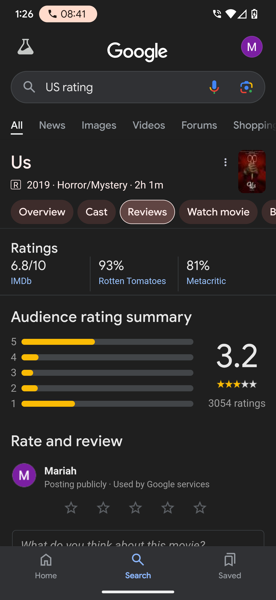

"We go to the theater to be entertained, but if what is left after you watch the movie is a sort of eye-opening perspective
on some social issues, then it can be a really powerful piece of art".
-Jordan Peele
.png)
Jordan Peele is a comedian turned director, came out with his groundbreaking
social thriller “Get Out”, and it took the world by storm. He was an unexpected overnight sucess.
His film came during a time of confusion and racial tension yet it was still ahead of its time
by a couple of years. Jordan’s ability to turn real life into a horror film without
the use of extreme gore, or overused special effects made an even deeper impact on
his audiences. The amazing actors, ingenious musical scores, and well writtn scripts are part
of what make his films funny, real, and completely horrifying.
_poster.jpg)
A brother and sister discover a strange phenomenon going on in
their city; leading others to greed and threatening their way of life.
HERE IS A DIRECTOR'S COMMENTARY ON THE FILM
HERE IS A FILM REVIEW
A man visits the family of his girlfriend only to discover that things are not really as they seem.
HERE IS A DIRECTOR'S COMMENTARY ON THE FILM
HERE IS A FILM REVIEW
 

A family vacation turns into a nightmare when they encounter the underworld versions of themselves.
HERE IS A DIRECTOR'S COMMENTARY ON THE FILM
HERE IS A FILM REVIEW